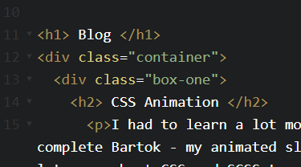

♠CSS Grid Layout♠
Aim & Objectives
Aim
♠ To create a basic webpage with an effective layout using CSS Grids
Objectives
- To Research and Learn CSS Grid Layout
- To create a template for future use on portfolio website
- Expand knowledge and programming ability in CSS Grids
- To build a demonstration webpage to show my understanding
What is CSS Grid Layout?
CSS Grid Layout is arguably one the most powerful layout systems available in CSS. It is a 2-dimensional system, which means meaning it can handle both columns and rows simultaneously, unlike flexbox which is largely a 1-dimensional system. As mentioned, many sources state it as the most powerful layout system (gridbyexample.com,2018) (CSS-tricks, 2016).
As mentioned previously, because it is 2-dimensional, it allows the developer to target both columns and rows at the same time; both the vertical and horizontal layout elements. As Flexbox can only handle one dimension horizontally, it is clear why CSS Grid is preferred when it comes to successful, concise web design.
Nevertheless, CSS Grid layout is not trying to push Flexbox out of the equation, nor was it developed to push others out in the bid to become the best of the best – it was simply created to offer developers and designers an easier way to layout a website; whilst also rendering the use of ‘position’ and ‘float’ unnecessary in the process.
Tools
- Codepen
- Brackets
- HTML5 & CSS
- Codepen
To build my demonstrator, I decided to use Codepen. Aside from my preference for opting for a darker theme when programming, it has lots of features I really appreciate. One being the reminders to save after a number of changes have been made (admit it – we all get a bit too ‘in the zone’ and forget from time to time!) and the live changes taking effect almost instantly.
I really like being able to tweak and play with elements live, especially when learning a new application of a language or new structure; so, as it offers all this paired with comfortable familiarity – I opt for Codepen.
I used HTML to set up the structure, then of course moved on to the CSS to apply and play with the Grid layout to see what would appear best for my blog page.
Researching CSS Grid Layout
As I am familiar with CSS but not the Grid Layout, I had to do some research from reliable sources to expand my understanding. As much fun as it is admiring other people’s layouts, if you don’t understand what you’re reading you won’t get very far (as I learnt through CSS Animation!)
As they had been a crucial and reliable resource so many times before, I turned to W3Schools firstly. What I love about W3Schools is how it breaks it down step-by-step, and they use images where necessary to help you visualise, just like this one;
As seen above, CSS Grid layout is a way of utilising all the available space on the page; displaying elements and images within them nicely and concisely; leaving no blank or empty space (unless the developer/designer intends to of course!),
I also researched on CSS-tricks; this helped me to understand the parent & child elements and their relationship and semantics, as I found it a little tricky to apply at first. I decided I was ready to try and apply some of my learning after reading the guides and advice offered.
Applying CSS Grid Layout
I felt I had learned enough about the positioning, and how to properly structure and layout each of the elements. Then I decided to apply the basic fundamentals in setting up my blog page; I would need a parent element; a ‘container’ as such, and then I would need each blog post to appear as a separate child element; i.e. ‘box-one’, ‘box,two, etc, until I had each post in it’s own section.

Typically, users of websites – be the site for business or personal use – wish to see the most recent, most ‘fresh’ news and information first. With this in mind, I decided to put my most recent blog posts in the largest boxes when displayed on desktop. This would mean that the two largest ones would be the most recent; most-eye catching and easiest to click on the page.
The less-recent blogs would follow, in reverse chronological order; meaning if the user wanted to, they could easily access the older content, but they would not have to waste their browsing time sifting through older news as a priority.
When accessed on mobile devices, I have created a media query within the CSS which displays each blog post on the page as a single-column layout – also in reverse chronological order.
As taken from research conducted by HubSpot (2018), users typically skim blogs over consuming them thoroughly; hence why I opted to have the most recent ones above the older blogs. I do not want users to get bored; and as my previous portfolio blog page was extremely long winded; I wanted to apply reasoning behind my layout change beyond the aesthetics.
My CSS Grid Layout
You can view the demonstrator I built here;
CSS Grid Layout on Codepen
Evaluation
After learning and applying (and playing around with!) CSS Grid layout; I must say I do agree with those who remark it as a powerful layout system – I have enjoyed playing around with the elements and I can’t wait to remake my entire portfolio using this system.
I now feel more confident as a CSS developer and I have discovered more of a passion for CSS than I ever had before. I had quite low-confidence when it came to website styling and application, as I did not see myself as a good or capable designer but learning this layout has really helped me gain skills and confidence within it. It has changed the way I look at design and has sparked an excitement to explore deeper.
References
W3schools.com. (2018). CSS Grid Layout. [online] Available at: https://www.w3schools.com/css/css_grid.asp [Accessed 7 Jan. 2018].
Gridbyexample.com. (2018). Grid by Example - Usage examples of CSS Grid Layout. [online] Available at: https://gridbyexample.com/examples/ [Accessed 27 Dec. 2017].
CSS-Tricks. (2016). A Complete Guide to Grid | CSS-Tricks. [online] Available at: https://css-tricks.com/snippets/css/complete-guide-grid/ [Accessed 13 Jan. 2018].
Librizzi, A. (2017). Advancing to CSS Grid a Two Dimensional Framework - POGALTD.COM. [online] POGALTD.COM. Available at: https://pogaltd.com/advancing-css-grid-two-dimensional-framework/ [Accessed 12 Jan. 2018].
Codepen.io. (2018). CodePen. [online] Available at: https://codepen.io/ [Accessed 15 Jan. 2018].
An, M. (2018). The Future of Content Marketing: How People Are Changing the Way They Read, Interact, and Engage With Content. [online] Research.hubspot.com. Available at: https://research.hubspot.com/the-future-of-content-marketing [Accessed 15 Jan. 2018].